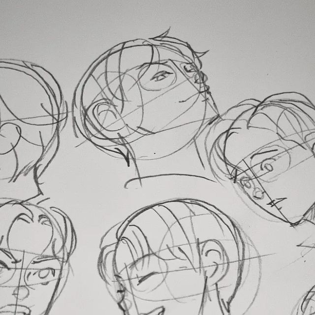

|  |
When drawing a face, consider focusing on these key elements:
1. Proportions: Learn the typical measurements (e.g., the eyes are usually halfway down the head).
2. Facial Features: Study the structure and shapes of eyes, noses, mouths, and ears.
3. Symmetry: Understand that faces are generally symmetrical but often have unique asymmetries.
4. Expressions: Practice drawing different facial expressions to convey emotions.
5. Light and Shadow: Learn about how light affects form and creates depth.
6. Anatomy: Familiarize yourself with the underlying bone and muscle structure to make your drawings more realistic.
7. Styles: Experiment with different art styles, from realistic to cartoonish.
8. Skin Tones and Textures: Study color theory and how to render different skin tones.
9. Hair: Learn techniques for drawing various hair types and styles.
10. Reference: Use references or photographs to understand real faces better.
Regular practice and studying from life or references will significantly improve your skills!
|